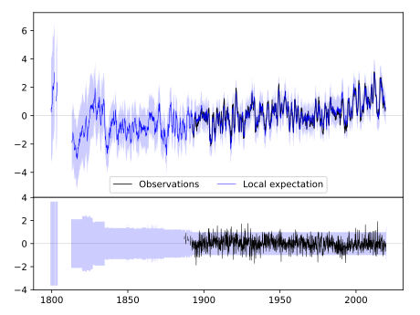
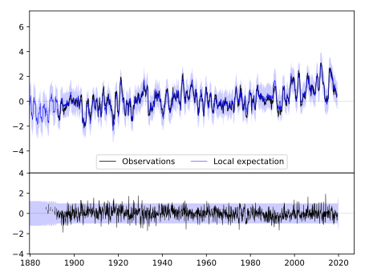
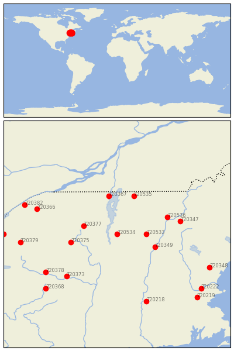

CORNWALL [USA]


| Neighbour | Name | Country | Distance | Lon/Lat | Years |
|---|
| 720534 | CORNWALL | USA | 0 | -73.2, 44.0 | 1887-2019 |
| 720533 | CHELSEA | USA | 55 | -72.5, 44.0 | 1885-2019 |
| 720377 | LAKE PLACID 2 S | USA | 67 | -74.0, 44.2 | 1887-2019 |
| 720349 | HANOVER | USA | 79 | -72.3, 43.7 | 1834-2019 |
| 720375 | INDIAN LAKE 2SW | USA | 90 | -74.3, 43.8 | 1892-2019 |
| 720367 | CHAZY | USA | 101 | -73.4, 44.9 | 1873-2019 |
| 720535 | ENOSBURG FALLS | USA | 104 | -72.8, 44.9 | 1884-2019 |
| 720536 | SAINT JOHNSBURY | USA | 105 | -72.0, 44.4 | 1853-2019 |
| 720347 | BETHLEHEM 2 | USA | 124 | -71.7, 44.3 | 1887-2019 |
| 720373 | GLOVERSVILLE | USA | 147 | -74.4, 43.0 | 1892-2019 |
| 720366 | CANTON 4 SE | USA | 165 | -75.1, 44.6 | 1854-2019 |
| 720378 | LITTLE FALLS CITY RS | USA | 169 | -74.9, 43.1 | 1892-2019 |
| 720379 | LOWVILLE | USA | 185 | -75.5, 43.8 | 1827-2019 |
| 720218 | AMHERST | USA | 186 | -72.5, 42.4 | 1836-2019 |
| 720382 | OGDENSBURG 4 NE | USA | 191 | -75.4, 44.7 | 1838-2019 |
| 720348 | DURHAM | USA | 198 | -71.0, 43.2 | 1884-2019 |
| 720368 | COOPERSTOWN | USA | 199 | -74.9, 42.7 | 1854-2019 |
| 720386 | WATERTOWN | USA | 215 | -75.9, 44.0 | 1856-2019 |
| 720222 | LAWRENCE | USA | 216 | -71.2, 42.7 | 1856-2019 |
| 720219 | BEDFORD | USA | 226 | -71.3, 42.5 | 1885-2019 |